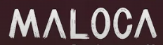
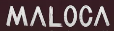

Bodø
Maloca is a coffee retreat rooted in quality, calm, and intention. A space for specialty coffee, plant-based food, and quiet moments.
Alongside the café experience, Maloca offers restorative practices such as floating therapy and yoga.
Dronningens gate 30
Bodø, Norway
Mon–Fri 10–17
Sat 11–17 · Sun closed

 
